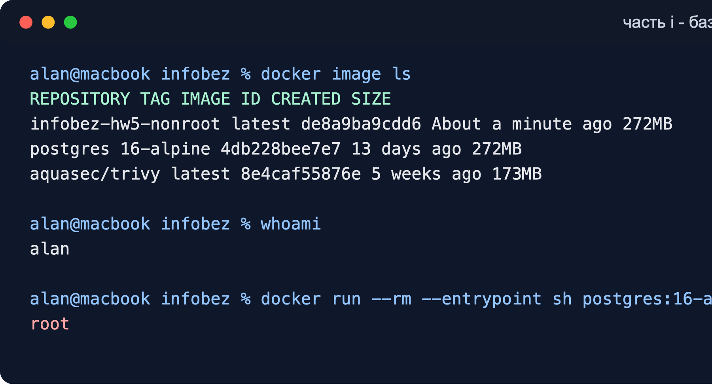
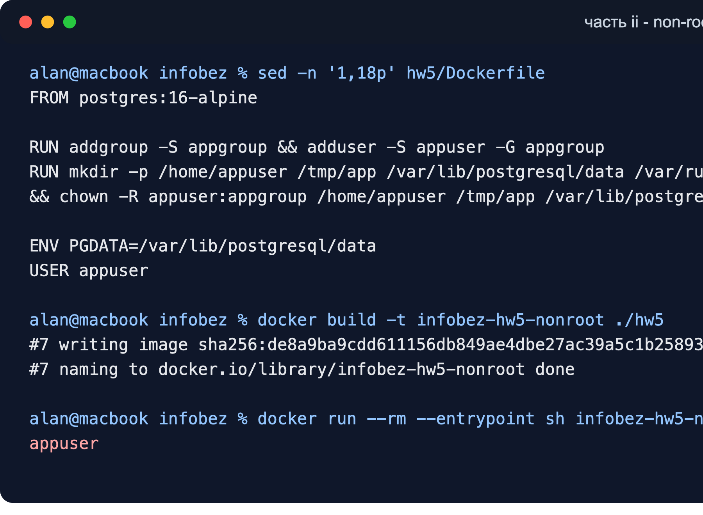
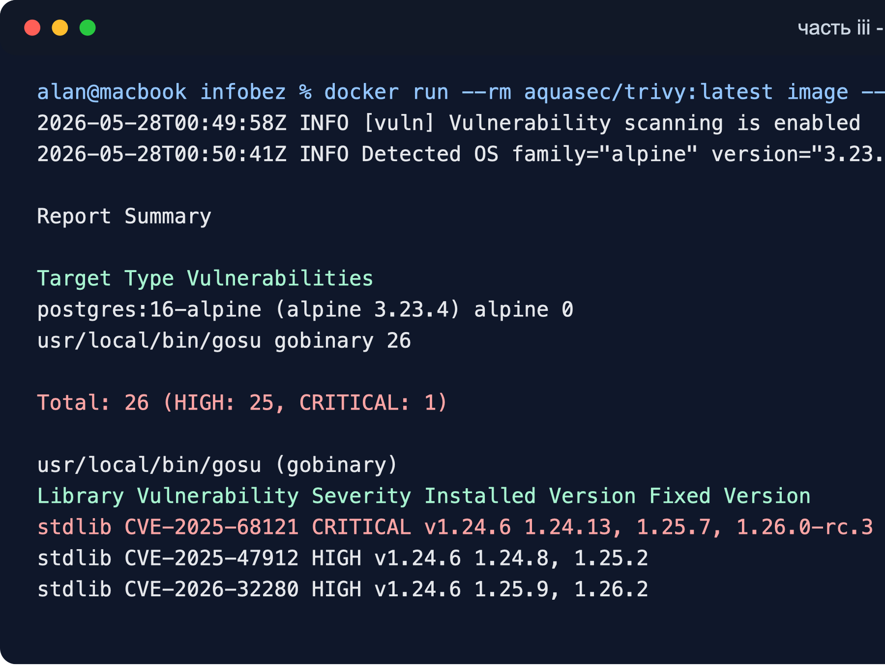

студент: Халибеков Алан, БИВТ-24-9
в этой работе нужно было проверить базовую безопасность docker-контейнера: посмотреть, от какого пользователя запускается базовый образ, собрать свой образ с не-root пользователем и проверить его сканером уязвимостей.
для работы я выбрал официальный образ из docker hub:
postgres:16-alpineобраз удобен для задания, потому что он небольшой, основан на alpine и при этом является реальным сервисом, а не пустым тестовым контейнером.
сначала я посмотрел, какие docker-образы есть локально:
docker image lsв списке был выбранный образ:
REPOSITORY TAG IMAGE ID CREATED SIZE
postgres 16-alpine 4db228bee7e7 13 days ago 272MBпотом проверил пользователя на хосте и внутри контейнера:
whoami
alan
docker run --rm --entrypoint sh postgres:16-alpine -c whoami
rootполучилось, что на хосте используется обычный пользователь, а внутри базового контейнера команда whoami показывает root. это не лучший вариант с точки зрения безопасности, потому что при ошибке в приложении или неправильном монтировании файлов атакующий получает больше возможностей внутри контейнера.
скриншот выполнения первой части:

для второй части я написал Dockerfile на основе того же образа. в нем создается отдельный пользователь appuser, под него готовятся рабочие каталоги PostgreSQL, после чего через USER appuser контейнер переключается с root на обычного пользователя.
FROM postgres:16-alpine
RUN addgroup -S appgroup && adduser -S appuser -G appgroup
RUN mkdir -p /home/appuser /tmp/app /var/lib/postgresql/data /var/run/postgresql \
&& chown -R appuser:appgroup /home/appuser /tmp/app /var/lib/postgresql /var/run/postgresql
ENV PGDATA=/var/lib/postgresql/data
USER appuser
# дополнительные настройки безопасности при запуске контейнера:
# docker run --read-only --cap-drop ALL --security-opt no-new-privileges
# docker run --memory 256m --cpus 1
# docker run -p 127.0.0.1:5432:5432
# также лучше не передавать секреты через аргументы командной строкипосле этого я собрал образ:
docker build -t infobez-hw5-nonroot ./hw5сборка завершилась успешно:
writing image sha256:de8a9ba9cdd611156db849ae4dbe27ac39a5c1b258936c525eec11dacc7f5a9a done
naming to docker.io/library/infobez-hw5-nonroot doneпроверка пользователя внутри нового контейнера:
docker run --rm --entrypoint sh infobez-hw5-nonroot -c whoami
appuserтеперь контейнер открывает shell уже не от root, а от пользователя appuser. дополнительно я проверил обычный запуск контейнера с переменной POSTGRES_PASSWORD, PostgreSQL стартовал и в логах дошел до состояния database system is ready to accept connections.
скриншот сборки и проверки пользователя:

дополнительные настройки безопасности, которые я указал в комментариях Dockerfile:
--read-only - запуск файловой системы контейнера только на чтение;--cap-drop ALL - отключение лишних linux capabilities;--security-opt no-new-privileges - запрет повышения привилегий внутри контейнера;--memory 256m и --cpus 1 - ограничение ресурсов, чтобы контейнер не мог забрать всю машину;-p 127.0.0.1:5432:5432 - публикация порта только на localhost, а не на все сетевые интерфейсы;для сканирования я использовал trivy:
docker run --rm aquasec/trivy:latest image --scanners vuln --timeout 10m --severity HIGH,CRITICAL postgres:16-alpineпервый запуск с настройками по умолчанию шел слишком долго на анализе файлов, поэтому для части с уязвимостями я явно оставил scanner vuln. для задания этого достаточно, потому что нужно проверить образ на high и critical уязвимости.
сводка по результатам:
Report Summary
postgres:16-alpine (alpine 3.23.4)
Total: 0
usr/local/bin/gosu (gobinary)
Total: 26 (HIGH: 25, CRITICAL: 1)скриншот вывода trivy:

по системным пакетам alpine scanner не нашел high или critical уязвимостей. это хороший признак: базовая часть образа выглядит достаточно свежей.
основные проблемы нашлись в бинарном файле gosu, точнее в встроенной go standard library версии v1.24.6. trivy показал 26 уязвимостей: 25 high и 1 critical. самая важная находка:
CVE-2025-68121
Severity: CRITICAL
Package: stdlib
Installed Version: v1.24.6
Fixed Version: 1.24.13, 1.25.7, 1.26.0-rc.3
Title: crypto/tls: Incorrect certificate validation during TLS session resumptionтакже были high-уязвимости в пакетах go standard library, например в net/url, net/http, crypto/x509, encoding/pem, archive/tar, archive/zip и os. почти для всех проблем trivy указывает исправленные версии go.
по первой части видно, что базовый контейнер при запуске shell работает от root. это плохая привычка для production-контейнеров, даже если сам сервис потом может сбрасывать привилегии.
во второй части я собрал свой образ и переключил его на отдельного пользователя appuser. проверка whoami подтвердила, что root больше не используется для shell внутри контейнера. также в Dockerfile указал дополнительные флаги безопасного запуска: read-only filesystem, cap-drop, no-new-privileges, ограничения cpu и памяти, а также привязку порта только к localhost.
по результатам trivy сам alpine-слой выглядит нормально, но в gosu есть high и critical уязвимости из go standard library. поэтому образ нельзя просто считать полностью безопасным. правильное действие - обновить базовый образ, когда выйдет версия с исправленным gosu, либо пересобрать вспомогательный бинарник на исправленной версии go. еще такой scan нужно добавить в ci/cd, чтобы новые уязвимости ловились автоматически.